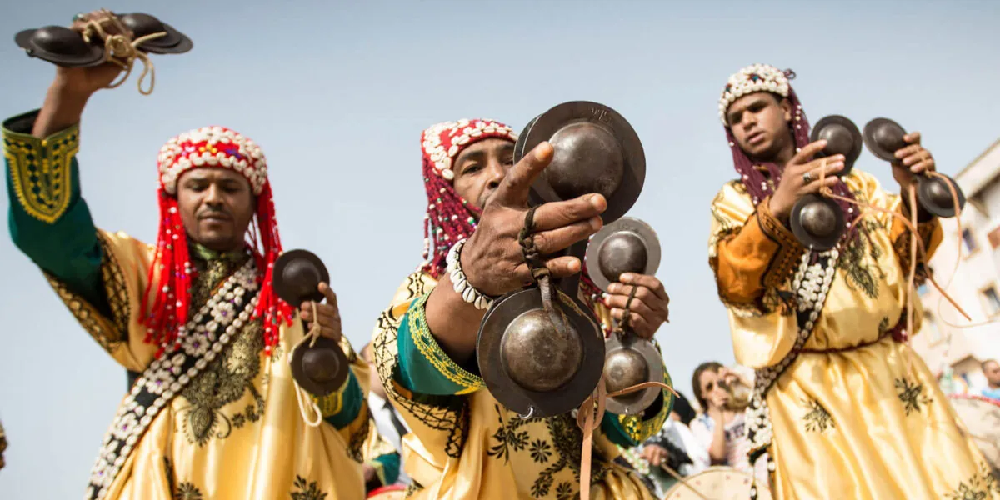
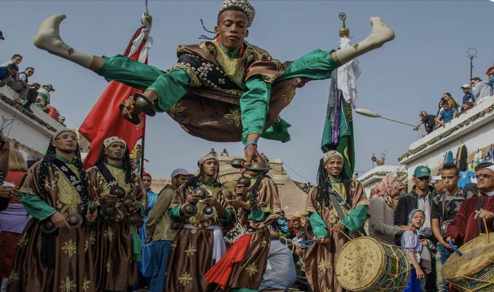

Gnaoua Music: Morocco's Spiritual Musical Tradition and the Magic of Essaouira
Gnaoua (or Gnawa) is a centuries-old Moroccan spiritual music blending West African, Amazigh and Sufi roots — UNESCO-listed, and celebrated each summer in Essaouira.
For many visitors, Morocco is first discovered through its architecture, colourful souks, fragrant spices and slow-cooked cuisine. Yet one of its greatest cultural treasures is neither seen nor tasted — it is heard.
Gnaoua (also spelled Gnawa in English) is a spiritual Moroccan musical tradition whose roots reach back several centuries. Born from the encounter between West African, Amazigh (Berber) and Islamic Sufi traditions, it is more than music: a living heritage where rhythm, spirituality and centuries of cultural exchange come together. From intimate night-long ceremonies to international concert stages, Gnaoua has become one of Morocco's most celebrated artistic expressions — captivating audiences worldwide while remaining deeply rooted in its ancestral traditions.
What Is Gnaoua?
Gnaoua carries memories of migration, resilience, spirituality and cultural exchange. Originally transmitted orally from one generation to the next, it weaves music, poetry, rhythm and ritual into a single artistic expression that remains alive today.
Rather than being preserved in museums, Gnaoua continues to evolve through the people who perform it, teach it and pass it on.
In recognition of its exceptional cultural value, UNESCO inscribed Gnaoua on the Representative List of the Intangible Cultural Heritage of Humanity in 2019, acknowledging not only its musical richness but also its role in preserving oral traditions, craftsmanship, spiritual practice and intergenerational transmission.
The Instruments Behind the Sound
One of the reasons Gnaoua is immediately recognisable lies in its distinctive instrumentation.
The Guembri
At the heart of every performance is the guembri, a three-stringed bass lute carved from wood and traditionally covered with camel or goat skin. Its deep resonance forms the foundation upon which every melody is built.
The Krakebs
The hypnotic pulse comes from the krakebs — large iron castanets played in intricate rhythmic patterns. Their metallic sound creates the powerful heartbeat of Gnaoua music.
Voice and Chant
Call-and-response singing accompanies the instruments, creating an immersive musical dialogue that invites both musicians and listeners into the performance.
The Gnaoua Maâlems
The masters of this tradition are known as Maâlems, meaning "masters."
A Maâlem is far more than a musician. He is at once performer, composer, teacher and guardian of centuries of oral tradition. Becoming a Maâlem often requires decades of apprenticeship — learning not only melodies and rhythms but also the ceremonies, symbolism and spiritual knowledge that cannot be learned from books.
Today, Morocco's Maâlems remain the living custodians of one of the country's richest cultural traditions.
More Than Music
For centuries, Gnaoua has accompanied Lila ceremonies — night-long gatherings centred around music, spirituality, remembrance and healing. Its hypnotic rhythms and repetitive chants create an atmosphere that encourages meditation, reflection and collective celebration.

Although deeply rooted in these traditions, Gnaoua has also become a universal musical language. Its powerful rhythmic structure naturally lends itself to dialogue with other genres, including:
- Jazz
- Blues
- Reggae
- Rock
- Funk
- World music
Rather than losing its identity, Gnaoua continues to evolve while remaining faithful to its origins.
The Gnaoua and World Music Festival of Essaouira
Every summer, the Atlantic city of Essaouira becomes the beating heart of Gnaoua culture.
Since its creation in 1998, the Gnaoua and World Music Festival has grown into one of Africa's most celebrated cultural events and one of the world's most respected festivals dedicated to musical dialogue. Its philosophy is simple yet extraordinary: bring Morocco's legendary Gnaoua Maâlems together with internationally acclaimed musicians to create performances that exist nowhere else.
Over the years, the festival has welcomed remarkable artists including Pat Metheny, Marcus Miller, Joe Zawinul, Maceo Parker, Richard Bona, Carlinhos Brown, Buika, Hindi Zahra, Yasmine Hamdan, Dhafer Youssef, Tiken Jah Fakoly, Hoba Hoba Spirit, Saint Levant, 47SOUL, Cimafunk and Ganavya.
Each edition creates new encounters — where jazz meets Gnaoua, blues meets ancestral rhythms, reggae meets spiritual chant, and contemporary artists discover one of Morocco's oldest living traditions. Today the festival draws hundreds of thousands of visitors from around the world and has become one of Morocco's greatest cultural ambassadors.
Why Gnaoua Continues to Inspire the World
Part of Gnaoua's universal appeal lies in its ability to speak a language beyond words. Its rhythms are hypnotic, its melodies timeless, its traditions still inspiring musicians, artists and audiences on every continent.
Few musical traditions have managed to remain so deeply authentic while embracing dialogue with the wider world.
Discovering the Spirit of Morocco at Dar Mansour
At Dar Mansour, we believe Morocco is experienced through all the senses — through family recipes passed down by generations of Dadas, through handcrafted interiors inspired by Moroccan artisans, through traditional hospitality, and through the music that accompanies every evening.
Many of the sounds that shape the atmosphere at Dar Mansour draw inspiration from Morocco's rich musical heritage, including the timeless rhythms of Gnaoua — a spirit you can hear in our own playlist, Dar Mansour Groove — Volume I. Together, they offer more than a dinner: a journey into Morocco's living culture, here in the heart of Hin Kong, Koh Phangan.
Whether you come for a slow-cooked tajine, a Friday couscous ritual, a glass of mint tea, or simply to immerse yourself in the sounds of Morocco, Dar Mansour invites you to discover a culture where music, craftsmanship, hospitality and cuisine have always belonged together.
Because Morocco is not only something you taste. It is something you feel.
Frequently asked questions
Is it spelled Gnaoua or Gnawa?
Both are correct. Gnaoua is the French spelling widely used in Morocco and Europe; Gnawa is the common English transliteration. They refer to the same Moroccan spiritual music, its community of musicians and its ceremonies.
What is Gnaoua music?
Gnaoua is a centuries-old Moroccan spiritual tradition born from West African, Amazigh (Berber) and Islamic Sufi influences. It combines hypnotic rhythms, call-and-response chant and ritual, and was inscribed on UNESCO's list of Intangible Cultural Heritage of Humanity in 2019.
What instruments are used in Gnaoua music?
The two signature instruments are the guembri — a three-stringed bass lute carved from wood and covered with animal skin — and the krakebs, large iron castanets played in fast, interlocking patterns. Together with call-and-response singing, they create Gnaoua's unmistakable sound.
What is a Maâlem?
A Maâlem (meaning "master") is a master of the Gnaoua tradition — at once performer, composer, teacher and guardian of oral knowledge. Becoming a Maâlem can take decades of apprenticeship, learning not only music but the ceremonies, symbolism and spiritual practice behind it.
When and where is the Gnaoua Festival held?
The Gnaoua and World Music Festival takes place every summer in Essaouira, on Morocco's Atlantic coast. Founded in 1998, it brings Moroccan Maâlems together with international artists and has become one of Africa's most celebrated cultural events.
Taste the story around our table
The best chapters are written over a slow Moroccan dinner. Reserve your evening at Dar Mansour.